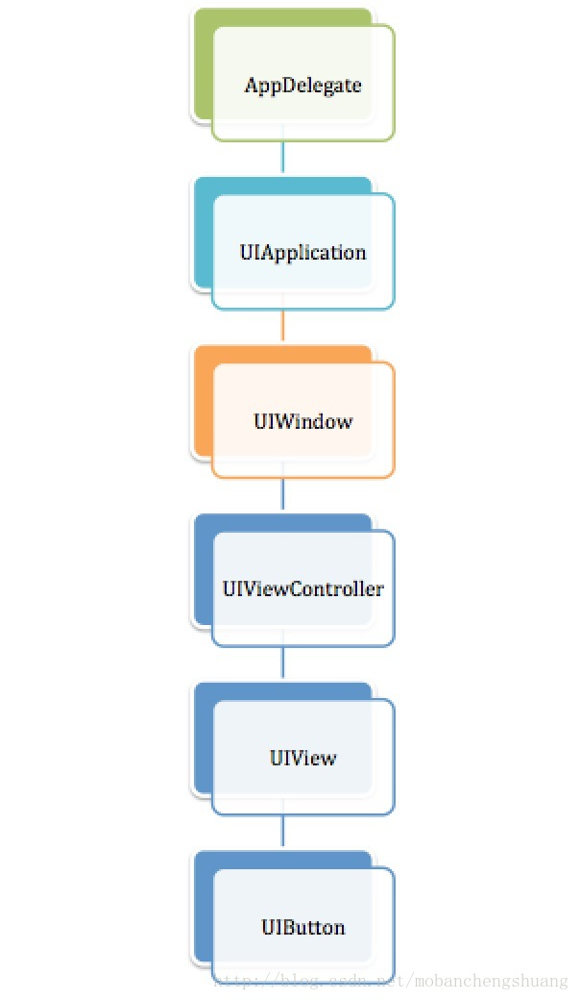
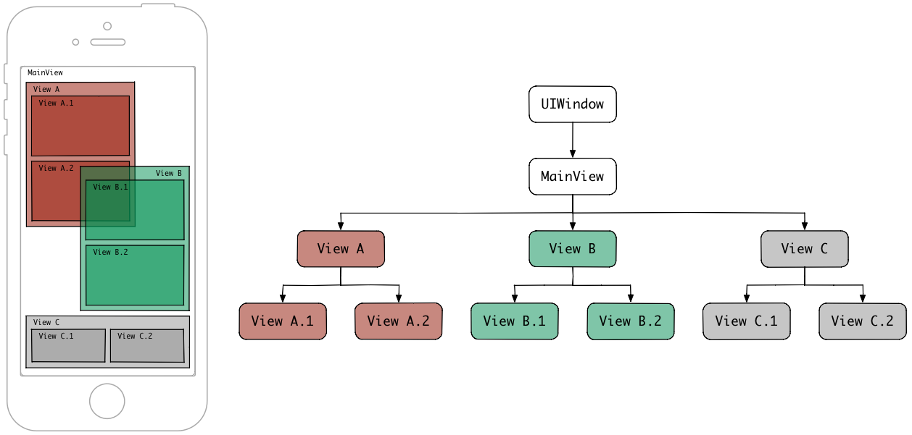
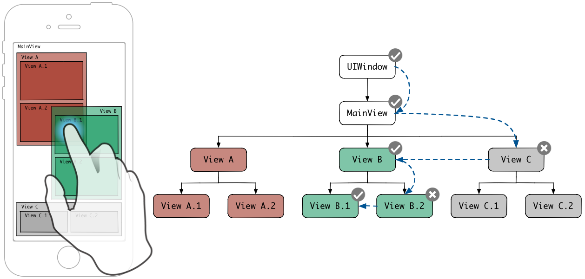

本文最后更新于：8 个月前
iOS有三种事件类型：
Touch Events（触摸事件）Motion Events（传感器运动事件，比如重力感应和摇一摇等）Remote Events（远程事件，比如用耳机上得按键来控制手机）
我主要谈谈触摸事件，触摸事件的整个过程可以分为传递和响应2个阶段：
传递：是当我们触摸屏幕时，为我们找出最适合的view层
响应：当我们找出最适合的view后，但未必此view可以响应触摸事件，所以需要继续找出能响应此事件的view
一、传递过程 基本上我们所能看到的所有图形界面都是继承自UIResponder的，UIResponder管理用户的操作事件的分发。
我们每个应用的视图结构中，一个视图可以有多个子视图，一个子视图同一时刻只有一个父视图，这叫N叉树，而每一个继承UIResponder的对象都可以在这个N叉树中扮演一个节点，当某个节点成为最高响应者的时候，从这个节点开始往其父节点开始追朔出一条链，那么对于这一个节点来讲，这一条链就是当前的响应者链。响应者链将系统捕获到的UIEvent与UITouch从叶节点开始层层向上传递，期间可以选择停止传递，也可以选择继续。
例如：
1 2 3 4 5 6 7 8 9 10 11 12 13 14 15 16 17 18 19 20 21 22 23 24 25 - (void)viewDidLoad {[super viewDidLoad ] ;[[AButton alloc ] initWithFrame:CGRectMake(0, 0, 100, 100) ];[UIColor lightGrayColor ] ;[button addTarget :self action :@selector (clickAction :) forControlEvents :(UIControlEventTouchUpInside )] ;[self .view addSubview :button ] ;NSLog(@"%@" ,sender .nextResponder ) ;NSLog(@"%@" ,sender .nextResponder .nextResponder ) ;NSLog(@"%@" ,sender .nextResponder .nextResponder .nextResponder ) ;NSLog(@"%@" ,sender .nextResponder .nextResponder .nextResponder .nextResponder ) ;NSLog(@"%@" ,sender .nextResponder .nextResponder .nextResponder .nextResponder .nextResponder ) ;NSLog(@"%@" ,sender .nextResponder .nextResponder .nextResponder .nextResponder .nextResponder .nextResponder ) ;2019 -01 -25 17 :24 :54.473862 +0800 touch1[16677 :338125 ] <UIView: 0x7fc54ee180e0 ; frame = (0 0 ; 375 812 ); autoresize = W+H; layer = <CALayer: 0x60c000032f80 >>2019 -01 -25 17 :24 :54.474111 +0800 touch1[16677 :338125 ] <ViewController: 0x7fc551803b90 >2019 -01 -25 17 :24 :54.474441 +0800 touch1[16677 :338125 ] <UIWindow: 0x7fc5518045d0 ; frame = (0 0 ; 375 812 ); gestureRecognizers = <NSArray: 0x608000442550 >; layer = <UIWindowLayer: 0x60800002cf60 >>2019 -01 -25 17 :24 :54.474593 +0800 touch1[16677 :338125 ] <UIApplication: 0x7fc551900000 >2019 -01 -25 17 :24 :54.474722 +0800 touch1[16677 :338125 ] <AppDelegate: 0x60000002ec60 >2019 -01 -25 17 :24 :54.474835 +0800 touch1[16677 :338125 ] (null)
通过层层打印nextResponder去寻找响应链，我们可以找到一条响应链，如图

实际上我们要把这棵树写完整，应该还要算上UIButton的UILabel和UIImageView，因为他们也是UIReponder的子类，这里就先不考虑了。
二、Hit-Testing View 有了事件响应链，接下来的就是寻找响应事件的具体响应者，我们称之为：Hit-Testing View，寻找最终相应事件的过程我们称着为Hit-Test，系统有一个层层调用的方法，如下
1 - (UIView *) hitTest:(CGPoint) point withEvent:(UIEvent *) event;
通过这个方法，系统会顺着响应链层层调用，直到响应链中某一个节点的方法返回了nil，那么证明传递过程中断，即找到了响应事件的view层了，该方法内部的逻辑如下：
1 2 3 4 5 6 7 8 9 10 11 12 13 14 15 16 - (UIView *)hitTest:(CGPoint )point withEvent:(UIEvent *)event {if (!self .isUserInteractionEnabled || self .isHidden || self .alpha <= 0.01 ) {return nil ;if ([self pointInside:point withEvent:event]) {for (UIView *subview in [self .subviews reverseObjectEnumerator]) {CGPoint convertedPoint = [subview convertPoint:point fromView:self ];UIView *hitTestView = [subview hitTest:convertedPoint withEvent:event];if (hitTestView) {return hitTestView;return self ;return nil ;


例如：可以通过重写hitTest:withEvent:的方法阻止响应链中最顶层的view作为响应者
1 2 3 4 5 6 7 8 9 10 11 12 13 14 15 16 17 18 19 20 21 22 - (void )viewDidLoad {super viewDidLoad];CGRectMake (0 , 0 , 200 , 200 )];UIColor redColor];self action:@selector (clickABtn:) forControlEvents:(UIControlEventTouchUpInside )];self .view addSubview:aButton];CGRectMake (100 , 100 , 200 , 200 )];UIColor greenColor];self action:@selector (clickBBtn:) forControlEvents:(UIControlEventTouchUpInside )];self .view addSubview:bButton];void )clickABtn:(id )sender {NSLog (@"AButton 点击" );void )clickBBtn:(id )sender {NSLog (@"BButton 点击" );
综上，每当手指接触屏幕，UIApplication接收到手指的事件之后，就会去调用UIWindow的hitTest:withEvent:方法，看看当前点击的点是不是在window内，如果是则继续依次调用subView的hitTest:withEvent:方法，直到响应链中断的前一个view或者调用到了最顶层的view，此时这个view和view上面依附的手势，都会和一个UITouch的对象关联起来，这个UITouch会作为事件传递的参数之一，我们可以看到UITouch头文件里面有一个view和gestureRecognizers的属性，就是hitTest view和它的手势。
三、Hit-Test的应用
重写hitTest:withEvent:方法阻断事件传递，实现指定效果
父view和子view响应同一事件
重写子view的hitTest:withEvent:方法，触发时同时调用super hitTest:withEvent:方法即可
四、其他 1、UITouch
UITouch对象记录 触摸的位置、时间、阶段。一根手指对应一个UITouch对象。
手指移动时，系统会更新同一个UITouch对象。
手指离开屏幕时，UITouch对象被销毁。
2、UIEvent
UIEvent是事件对象，每产生一个事件，就会产生一个UIEvent对象。记录事件产生的时刻和类型
1 2 3 4 5 6 7 8 9 10 void )touchesBegan:(NSSet <UITouch *> *)touches withEvent:(nullable UIEvent *)event;void )touchesMoved:(NSSet <UITouch *> *)touches withEvent:(nullable UIEvent *)event;void )touchesEnded:(NSSet <UITouch *> *)touches withEvent:(nullable UIEvent *)event;void )touchesCancelled:(NSSet <UITouch *> *)touches withEvent:(nullable UIEvent *)event;void )touchesEstimatedPropertiesUpdated:(NSSet <UITouch *> *)touches NS_AVAILABLE_IOS (9 _1);
以上4个方法中，都有UITouch和UIEvent两个类型的参数，一次完整的触摸过程中，4个触摸方法都是同一个UIEvent参数
如果两根手指同时触摸一个view，那么view只会调用一次touchesBegan:withEvent:方法，touches参数中装着2个UITouch对象，如果这两根手指一前一后分开触摸，那么分别调用2次touchesBegan:withEvent:方法，并且每次调用时的touches参数中只包含一个UITouch对象，所以根据touches中UITouch的个数可以判断出是单点触摸还是多点触摸
五、UIGestureRecognizer抽象类 UIGestureRecognizer将一些和手势操作相关的方法抽象了出来，但它本身并不实现什么手势，因此，在开发中，我们一般不会直接使用UIGestureRecognizer的对象，而是通过其子类进行实例化
常用手势
UITapGestureRecognizer（点击）
UILongPressGestureRecognizer（长按）
UISwipeGestureRecognizer（轻扫）
UIRotationGestureRecognizer（旋转）
UIPinchGestureRecognizer（缩放）
UIPanGestureRecognizer（拖拽）
1、初始化 这些手势在初始化时都采用父类的方法进行初始化
1 2 3 - (instancetype )initWithTarget:(nullable id )target action:(nullable SEL)action NS_DESIGNATED_INITIALIZER ;void )addTarget:(id )target action:(SEL)action;void )removeTarget:(nullable id )target action:(nullable SEL)action;
其中重复调用addTarget:action:方法会同时触发各自的方法
1 2 3 4 5 6 7 8 9 10 11 12 13 14 15 16 17 18 19 20 - (void )viewDidLoad {super viewDidLoad];UITapGestureRecognizer *tapGR = [[UITapGestureRecognizer alloc] init];self action:@selector (clickAction1:)];self action:@selector (clickAction2:)];self .view addGestureRecognizer:tapGR];void )clickAction1:(id )sender {NSLog (@"clickAction1" );void )clickAction2:(id )sender {NSLog (@"clickAction2" );2019 -01 -28 11 :24 :37.196729 +0800 touch5[10439 :342134 ] clickAction12019 -01 -28 11 :24 :37.196920 +0800 touch5[10439 :342134 ] clickAction2
2、属性 1 2 3 4 5 6 7 8 9 10 11 12 13 14 15 16 17 18 19 20 21 22 23 24 25 26 27 28 29 30 @property (nonatomic ,readonly ) UIGestureRecognizerState state;@property (nullable ,nonatomic ,weak ) id <UIGestureRecognizerDelegate > delegate;@property (nonatomic , getter =isEnabled) BOOL enabled;@property (nullable , nonatomic ,readonly ) UIView *view;@property (nonatomic ) BOOL cancelsTouchesInView;@property (nonatomic ) BOOL delaysTouchesBegan;@property (nonatomic ) BOOL delaysTouchesEnded;@property (nonatomic , copy ) NSArray <NSNumber *> *allowedTouchTypes@property (nonatomic , copy ) NSArray <NSNumber *> *allowedPressTypes@property (nonatomic ) BOOL requiresExclusiveTouchTypevoid )requireGestureRecognizerToFail:(UIGestureRecognizer *)otherGestureRecognizer;CGPoint )locationInView:(nullable UIView *)view;@property (nonatomic , readonly ) NSUInteger numberOfTouches;CGPoint )locationOfTouch:(NSUInteger )touchIndex inView:(nullable UIView *)view;@property (nullable , nonatomic , copy ) NSString *name API_AVAILABLE(ios(11.0 )
3、UIGestureRecognizerDelegate代理方法 1 2 3 4 5 6 7 8 9 10 11 12 13 14 15 16 17 18 19 20 21 - (BOOL)gestureRecognizerShouldBegin :(UIGestureRecognizer *)gestureRecognizer ;- (BOOL)gestureRecognizer :(UIGestureRecognizer *)gestureRecognizer shouldRecognizeSimultaneouslyWithGestureRecognizer :(UIGestureRecognizer *)otherGestureRecognizer ;- (BOOL)gestureRecognizer :(UIGestureRecognizer *)gestureRecognizer shouldRequireFailureOfGestureRecognizer :(UIGestureRecognizer *)otherGestureRecognizer NS_AVAILABLE_IOS (7 _0);- (BOOL)gestureRecognizer :(UIGestureRecognizer *)gestureRecognizer shouldBeRequiredToFailByGestureRecognizer :(UIGestureRecognizer *)otherGestureRecognizer NS_AVAILABLE_IOS (7 _0);- (BOOL)gestureRecognizer :(UIGestureRecognizer *)gestureRecognizer shouldReceiveTouch :(UITouch *)touch ;- (BOOL)gestureRecognizer :(UIGestureRecognizer *)gestureRecognizer shouldReceivePress :(UIPress *)press ;